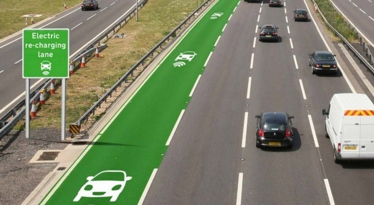

Des alternatifs pour moins polluer
Le transport écologique
Le transport écologique réduit considérablement vos dépenses en carburant.
Le transport écologique a pour objectif de réduire les émissions de gaz polluants et nos dépenses en carburant. De plus, l'utilisation massive de l'automobile est néfaste pour notre santé et notre environnement.
Pour ce faire, le transport durable a été mis en place comme : le transport collectif, le transport vert (vélo, marche à pied), l'autopartage, etc.
Pourquoi choisir le transport écologique ?
Le transport écologique a pour objectif principal de limiter considérablement nos dépenses en carburant qui ne cessent d'augmenter. Il permet de réduire, par la même occasion, la pollution qui est dangereuse pour la planète et notre santé.
Pour ce faire des moyens de transport écologiques ont été mis en œuvre pour limiter le gaspillage inutile de la consommation de carburant.
Transport écologique : quels sont les moyens mis en place ?
Différents moyens de transport écologiques ont été mis en place pour préserver la planète et notre santé comme :
- Les transports en commun
- Les transports verts (marche à pied, vélo)
- D'autres moyens : covoiturage, écoconduite, l'autopartage, les voitures écologiques, etc.
Les transports en commun
Il existe plusieurs transports collectifs qui sont beaucoup moins coûteux que la voiture traditionnelle :
- Le train est moins polluant que la voiture, de plus il est pratique et plus rapide
- Le bus : les villes sont dorénavant équipées de bons réseaux de bus
- Le tramway qui dispose d'un moteur 100 % électrique, préserve la qualité de l'environnement
Le transport vert
Le vélo, la marche à pied ou encore le roller pourront être privilégiés pour des petits trajets, sachant :
- Qu'il faut 8 minutes à pied pour faire 500 mètres
- Vous utilisez le même temps, sinon plus pour la voiture, car vous devez :
- La sortir du parking
- Respecter les feux et les limitations de vitesse
- Faire face aux embouteillages
- Et enfin trouver une place de stationnement qui est souvent payante
Le vélo, la marche à pied sont bons pour la santé et sont incontestablement les transports verts les plus intéressants pour les trajets courts. Plusieurs villes ont également mis en œuvre des dispositifs comme le Vélib' parisien pour se déplacer à vélo.
Les autres moyens de transport écologiques
D'autres moyens de transport écologiques sont aussi efficaces pour éviter d'utiliser la voiture :
- Le covoiturage qui consiste à partager sa voiture avec des individus qui effectuent le même trajet.
- L'autopartage : c'est un groupe de personnes qui se cotisent pour acquérir et entretenir un véhicule. La personne se sert de la voiture quand elle en a besoin. Une autre personne peut l'utiliser quand l'auto est au parking.
- L'écoconduite est une conduite souple qui vous aidera à réduire votre consommation de carburant de 40 %.
Progrès envisagables pour la voiture électrique de demain
Les voitures électriques ont le désavantage de devoir se recharger. C’est pour cela que certains techniciens travaillent dans le principe de « rouler en rechargeant » avec des dalles réceptrices. Les voitures bénéficient de 20 kilos watts (champs électriques, voiture équipée de dalles). Si ce principe marche, l’autonomie sera théoriquement infinie et il n’y aura plus besoin de recharger sa voiture ! Cependant, il y’aura un problème de mise à niveau de l’infrastructure, qui va payer et est-ce que les ondes électriques seront dangereux pour l’humain ? Des questions et expérience, recherches sont encore en cours mais il pourrait s’agir d’une alternative de la batterie électrique !
